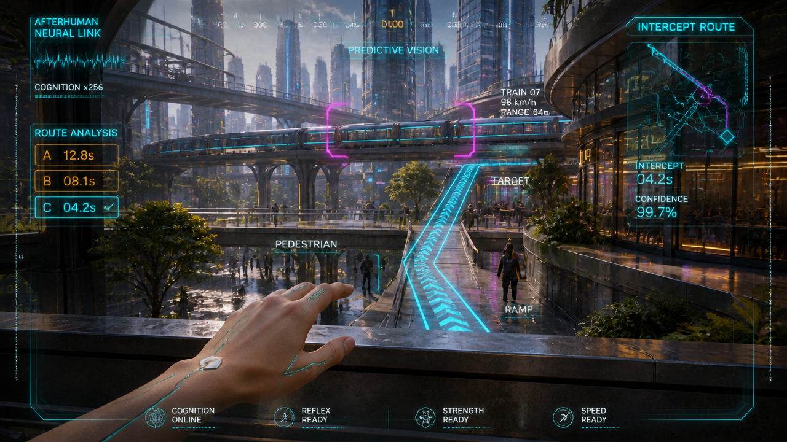
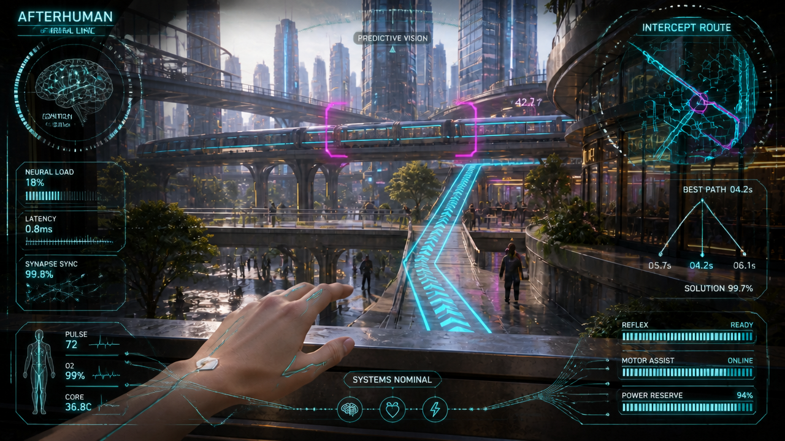
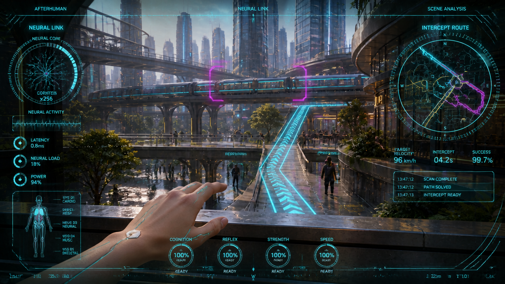

A — Predictive pursuit HUD
Same approved terrace; HUD-only concept

Three route options with a highlighted cyan winner make the prediction decision easy to find. Train data, intercept timing/confidence, neural waveform and four power-readiness indicators add useful density. Central train and ramp remain readable; hand pose and scene composition visually follow the source.
What still needs testing
- Tiny bearing/range typography and some object-label anchors need cleanup.
- Peripheral treatment slightly darkens the source.
- The least dense option; weaker in the requested immersive helmet-HUD feel.
B — Neural systems HUD
Same approved terrace; HUD-only concept

Circular wireframe brain plus neural load, latency and synapse readouts make enhanced intelligence visually explicit. Body telemetry, large route map, three-route comparison and subsystem bars provide rich peripheral information. Natural hand and city/train/route composition closely follow the source.
What still needs testing
- Small NEURAL LINK/brain lettering is visibly garbled; exact text must be rebuilt after selection.
- Peripheral panels darken the edges and some traces overlap the hand.
- Static concept only: tracking, animation and short-shot legibility remain untested.
C — Full tactical perception HUD · SELECTED
Same approved terrace; HUD-only concept

Closest to the requested Iron Man-like density: neural-core ring, waveform, circular radar and segmented gauges. Body diagnostics, scene annotations, intercept readouts, processing log and four ability dials fill the periphery. Central train and cyan ramp stay readable; hand and scene geometry visually follow the original.
What still needs testing
- Several tiny captions/status words are malformed; duplicate headers and lower-edge clutter need simplification.
- Busy peripheral framing darkens the scene slightly.
- Most demanding option for readable animation at 480p; selective emphasis and exact editorial labels will be needed.